A2: Laser Cut Object
October 25, 2021
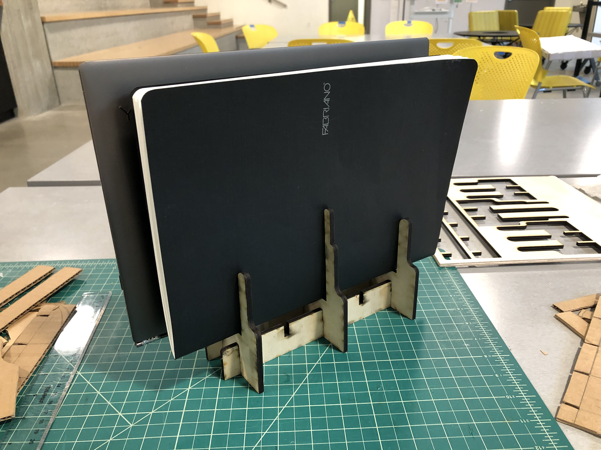The Goal
Design and build a laptop/tablet stand with a laser cutter to hold electronic device(s) upright. The design of the object must satisfy the following 3 requirements:
- must be cut from a single sheet of 18" x 24" chipboard
- must not use any glue, tape, or other fastening materials to assemble and use
- must be able to be disassembled into pieces that can be stored flat and transported
Design
I was really excited about this project since I've been needing a laptop/tablet stand! More specifically, I've been wanting a vertical laptop stand that will give me more desk real estate. Before going into sketching and ideation, the key design decisions I made were that:
- the stand should hold my laptop or my tablet up vertically
- the ports on the laptop/tablet must be easily accessible when stored in the stand
- the stand should be compact
- the laptop/tablet should be supported with ribs (this was more of an aesthetic choice)
After some sketching, I decided to prototype this simple stand where the laptop would sit inside a slim shelf, supported by this laser-cut rib design. The different pieces of the stand would slide into each other, forming a sturdy base.
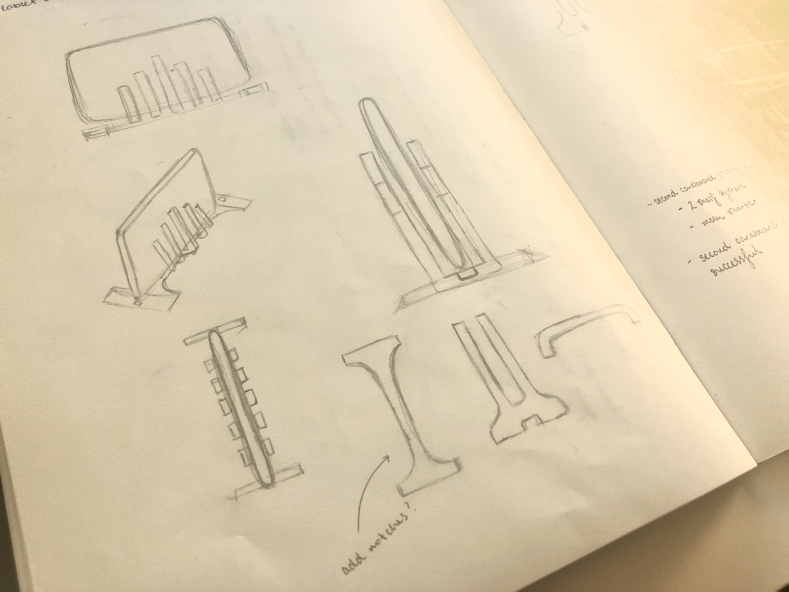Prototype
I created several prototypes throughout this process. My first prototype was constructed from cardboard as seen below!
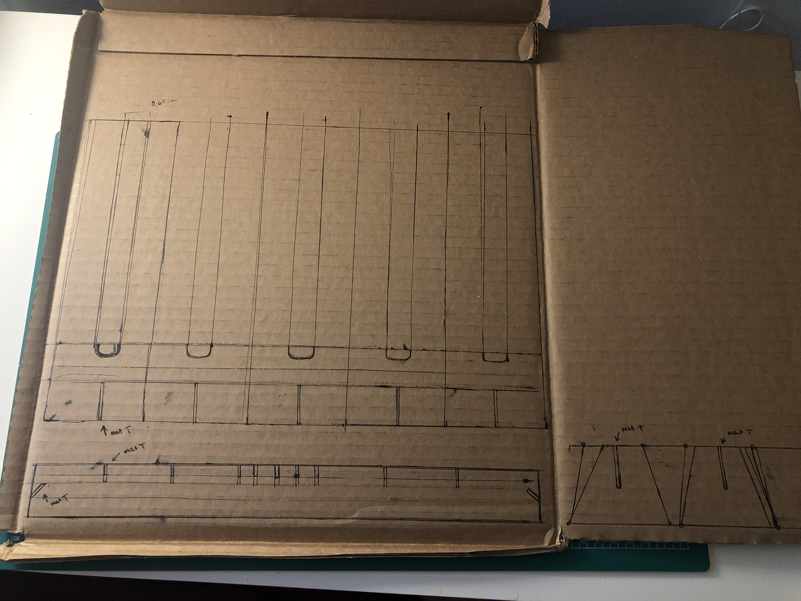 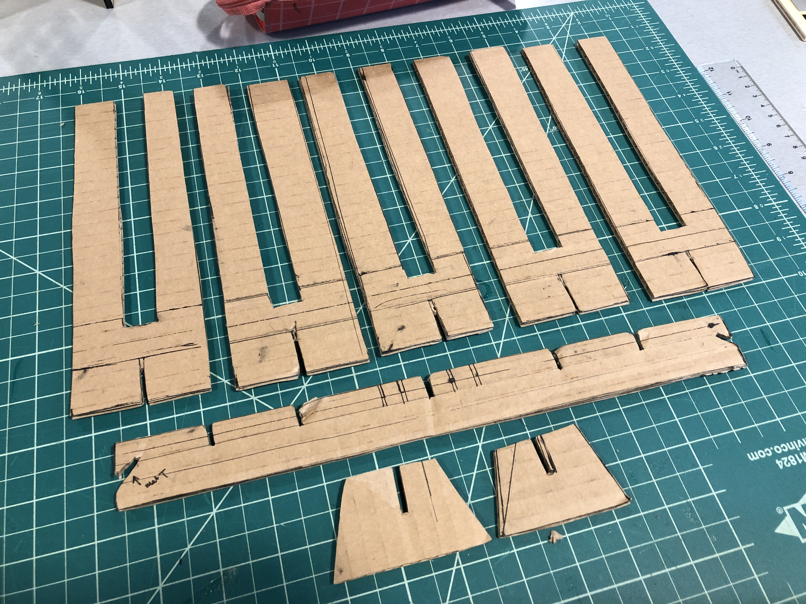 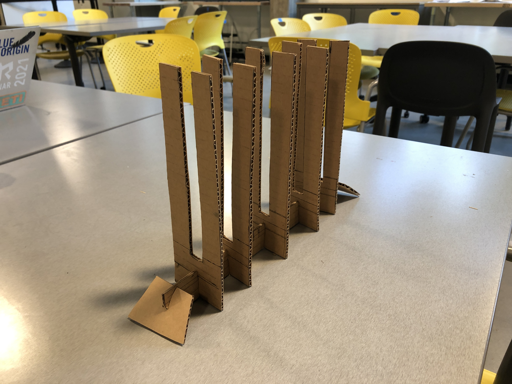 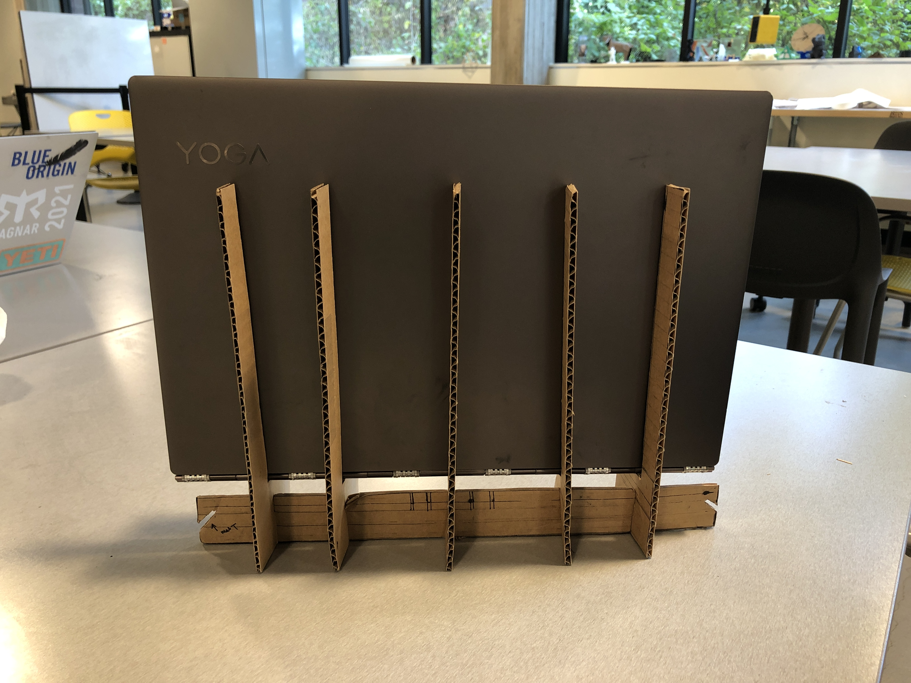 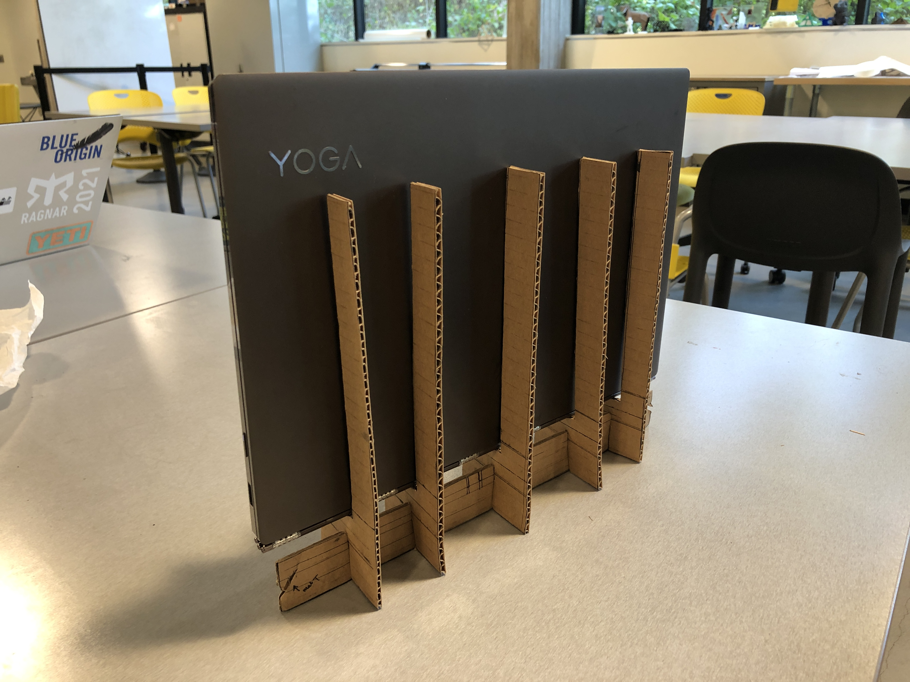This first prototype was able to successfully hold up my laptop. Since I knew I was going to go through multiple iterations of this prototype, I took this first one to critique to help inform my second prototype. During critique, I learned that the stand could hold up itself without the side feet at the base. I also learned that I could shorten the length of the base and the height of the ribs while still supporting the laptop/tablet. Since this first prototype felt sturdy, I was motivated to add on a second shelf to this stand that would allow it to hold both my laptop and my tablet! I incorporated these changes in my refined design shown below.
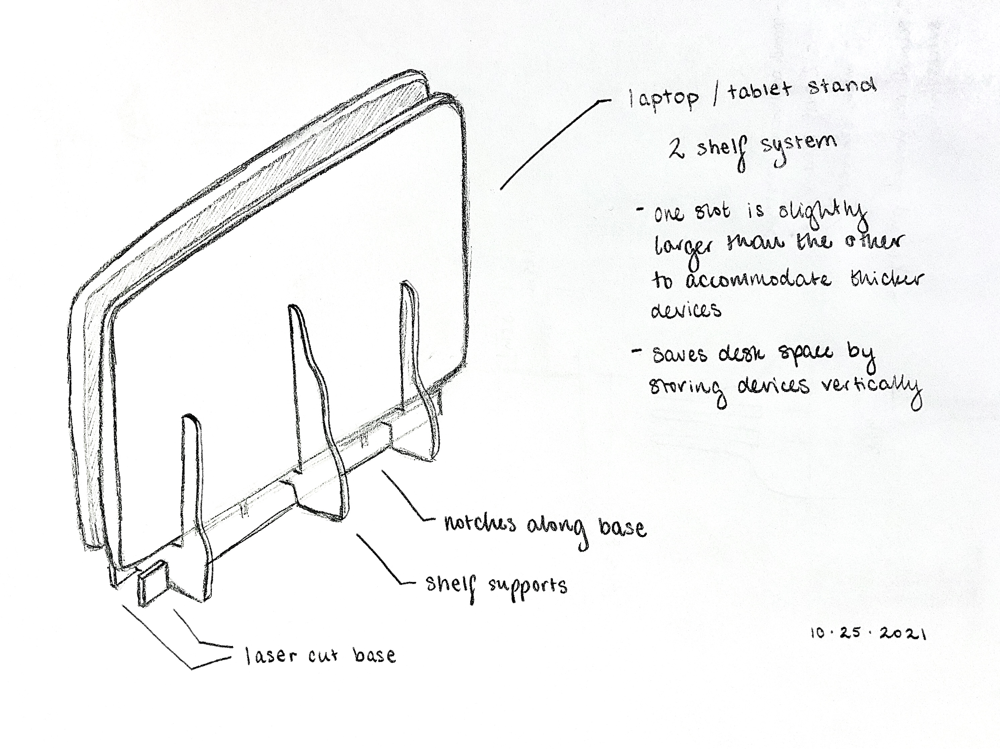While I was confident that I could begin creating the Illustrator file to laser cut this design, I wanted to create another cardboard prototype of this new version just to be sure.
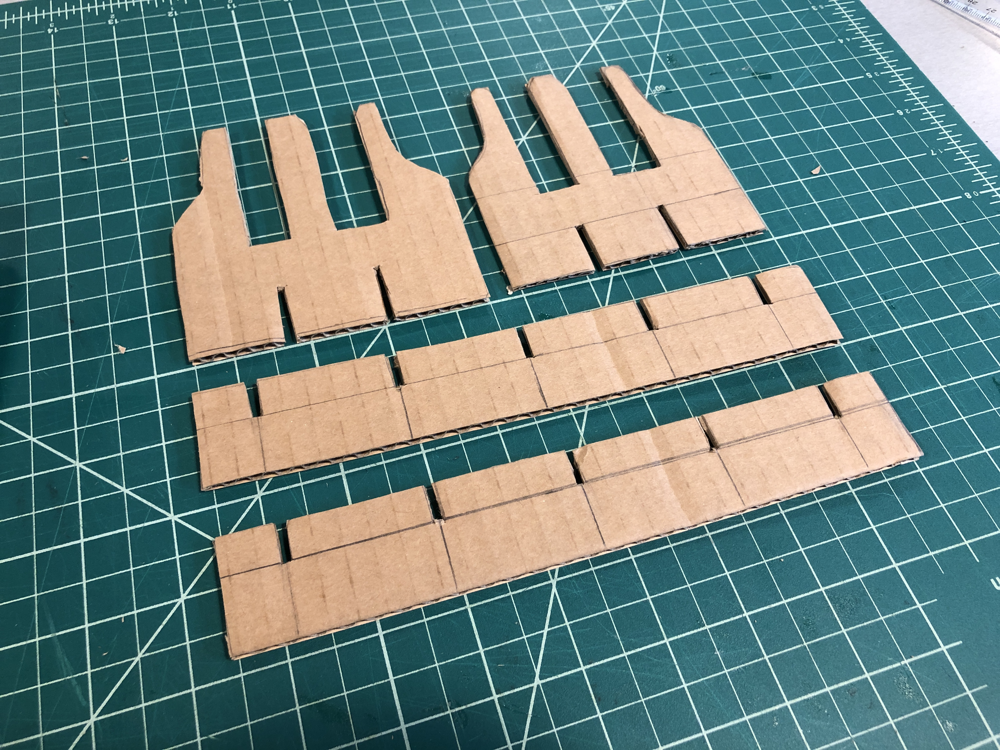 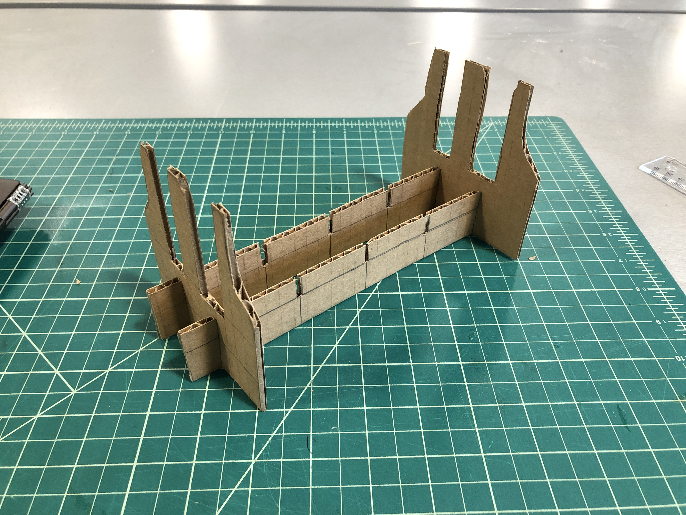 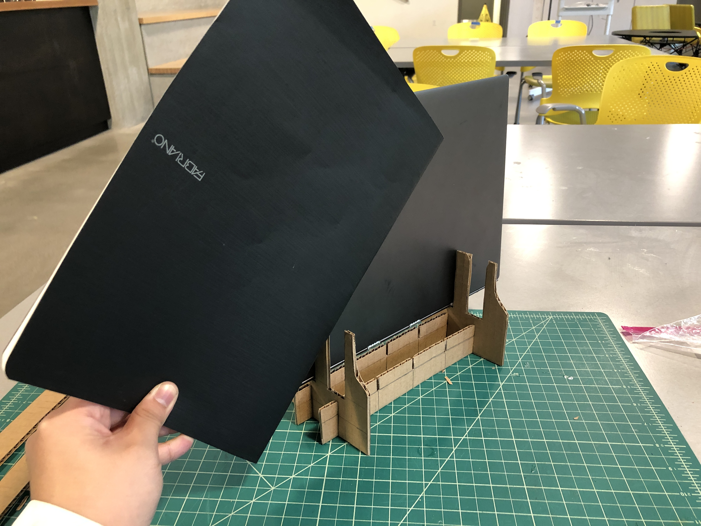 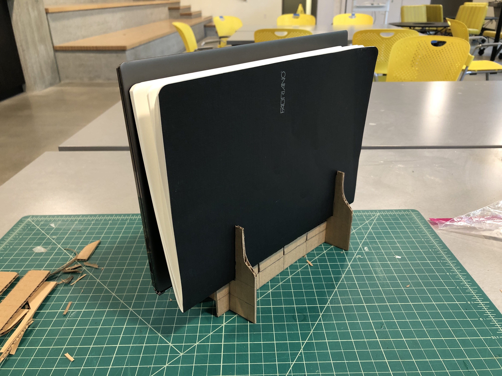The second cardboard prototype turned out well, and I successfully took what I learned from the first prototype to make an improved second prototype! I then worked on the Illustrator file to send to the laser cutter. Here's the third and final prototype!
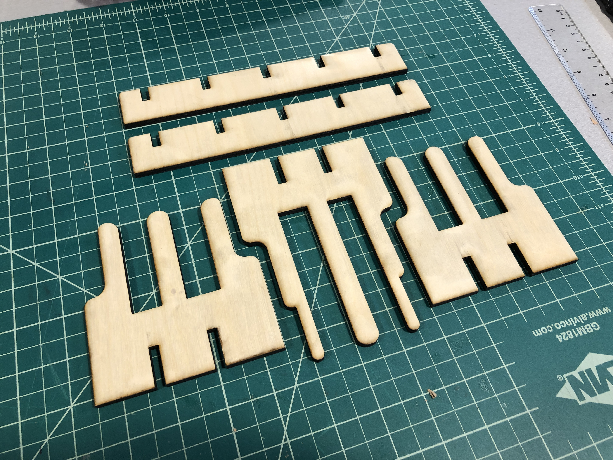Here's a picture of the final prototype at my desk! The design met my intended goals, and now I have more space on my desk for other items.
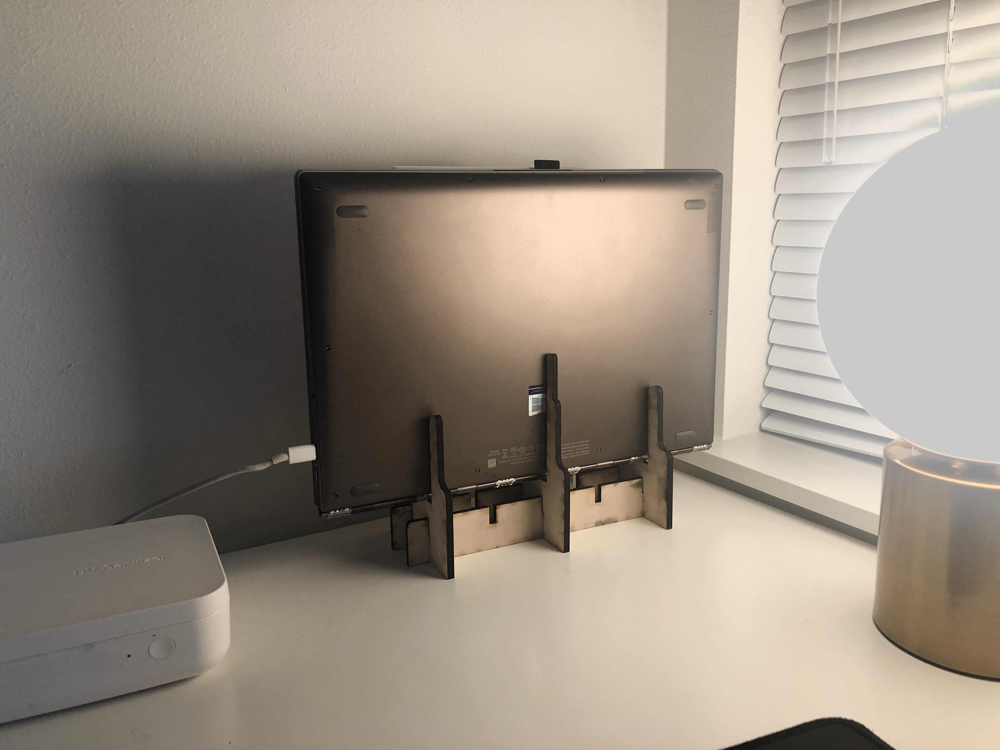User Test
Access user test video here on Youtube.
I conducted one user test with my final prototype where I asked the user to construct the laptop/tablet stand and then insert the provided devices. The user was encouraged to speak out loud about their experience during the test. The goals of the user test were to examine the prototype’s usability, feasibility, and desirability.
Usability
- I had the user assemble the stand, insert provided devices, and then disassemble the stand.
- This task allowed me to observe for points of confusion and where the stand could improve.
Feasibility
- Testing for feasibility was explored through the fidelity of the prototype and the complexity of putting the stand together.
- If the stand was too difficult to put together, then it's not feasible.
Desirability
- During and after the user test, I asked the user what they thought about the stand, if they would use it themselves, and how they
would improve it to better fit their needs.
- Their responses allowed me to think of ways that the stand could be more desirable to other users.
Analysis + Critique Feedback
What Worked Well:
- The stand is very easy to assemble and disassemble.
- Multiple notches along the base allow for customization.
- The stand feels sturdy when fully assembled.
- The stand successfully holds both a laptop and a tablet.
What Needed Improvement:
- One slot is thicker than the other slot to accommodate larger devices. However there's no indication on the ribs about these varying thicknesses.
To improve the design in the future, I should add a marker, pattern, or make a change in the rib's shape that indicates this.
- In the future, I should wipe off the edges of the laser cut object before using. Some of the burnt residue from the cut material's edges transferred
onto the devices.
Key Findings:
- Users found the design easy to assemble and disassemble.
- Users were impressed with how compact the final design was.
- The design could be improved by adding some markers that indicate the different slot thicknesses for a smoother assembly.
Want to laser cut this laptop/tablet stand? I cut it from a piece of 12" x 12" chipboard with a 5mm thickness. Access the Illustrator file here on my GitHub.